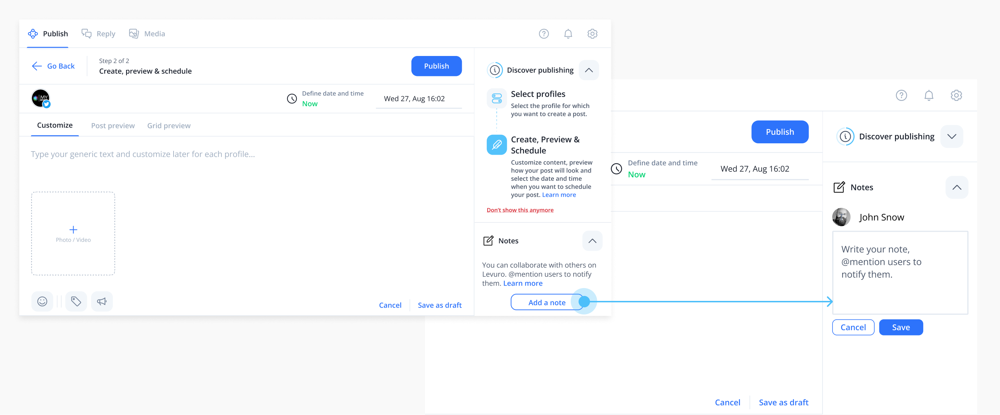

Allowing teams to collaborate in Levuro to increase App Engagement & User Retention
Introduction
About the company
Levuro is a social media management tool that allows people to manage their social media (Facebook, Twitter, Instagram, LinkedIn, YouTube) in one place.
Problem statement
User feedback revealed that teams struggled with collaboration, relying on email chains and text editors for reviews, making the process tedious.
Solution
We introduced a feature for instant messaging, allowing users to easily request feedback and discuss their posts directly within Levuro.
Roles and responsibilities
UX designers team of one. I manage the entire process including :
- Conducting user interviews to identify needs
- Creating wireframes and animated prototypes
- Conducting user testing and iterating designs
- Presenting to the team for feedback
- Collaborating with engineers on technical aspects
- Delivering high-fidelity prototypes to developers
Research: user interviews
User interviews revealed a struggle to work as a team in Levuro.
During this phase, I interviewed eight users to understand their way of working and needs. I also interviewed users working alone to see if they could also have a need for this feature.
Insight #1
Users struggled with post reviews via email, losing track of changes.
Insight #2
They want to mention specific team members and have a centralized communication space.
Insight #3
Users pefer to attach notes or files alongside comments.
Insight #4
Even solo users saw value in using notes for to-do lists or memos.
Research: competitive analysis
Competitive Analysis showed that the collaboration in other tools is either a rigid approval concept or non-existent.
We reviewed four competitors and found:
- Some tools has rigid approval flows with multiple approver levels.
- Competitors lacked a collaborative commenting system, presenting an opportunity for Levuro to innovate.
Research: Use cases identified
Identification of use cases to help design a feature that works for most users.
I gathered the team (CEO, three developers, and our social media manager) to brainstorm the different ways users could use the collaboration feature tool. Some use cases came directly from our users. Clear use cases help frame my work by understanding how users will need to use the features and their goals.
Use case #1
Alerting someone that a draft post is ready for publication.
Use case #2
Requesting media additions from photographers.
Use case #3
Adding personal notes or memos to drafts.
Use case #4
Seeking proofreading from team members.
Use case #5
Communicating changes like typos in scheduled posts.
Use case #6
Allowing clients to provide feedback easily.
Design: prototyping different solutions

I developed two main prototypes:
{kind=link}
Option 1: Approval flow where it's possible to assign someone to review the post.
{kind=link}
Option 2: Sidebar chat with notes for real-time discussions.
The team preferred the chat and notes concept (Option 2) for its flexibility. My next step was to focus on this concept and explore different options for how it could work by creating three clickable prototypes and testing them with six users.
Option 1: Concept of notes. Click here to try the prototype.
{kind=link}
Option 2: Notes and chat concept. Click here to try the prototype. Click here to try the prototype for the toolbar tooltips.

Option 3: Notes concept with a modal. Click here to try the prototype.
User testing feedback
User Testing revealed a considerable preference for option 2 but also some vulnerabilities. The next step was to present my findings to the team, the problems found and proposed solutions.
Learning #1
All users preferred prototype 2. They liked the option to be able to expand the area where they type their text.
Learning #2
Users need to be able to type their notes and still have a view of the post they are writing. Option 3 with the modal did not work for most users.
Learning #3
Users want what they are used to. Option 3 with the dropdown to mention someone had an adverse reaction. Users just wanted to use the “@” to mention someone. And could not see the utility of a dropdown menu.
Learning #4
The notes area was not visible enough for most users. If the educational content was expanded the space for the notes was limited.
ULearning #5
Users liked the concept of chat to communicate efficiently. And the toolbar where they could add an emoji, and mention someone. They see it important to be able to attach a file or a media to their comment.
| Problems | Solutions |
|---|---|
|
Notes are not visible enough. Because of all the features in the composer, user had difficulties seeing the notes area. |
1) Display of a placeholder note with an emoji to make it more visible. The text could
give users tips. 2) Display all tools on the left side using a vertical toolbar (see illustration below). |
"Send now" is scary for users. Some think it would send the comment to their
social media platforms.

|
Replace the text of the tooltip with "Add notes". |

| Problems | Solutions |
|---|---|
Users want to add media or files when writing a note.
|
Add the option to attach a file in the toolbar. Users should also be able
to drag and drop their files or media. |
When editing their comments, users still want to use the toolbar to add emojis, mention or attach a file.

|
Add these options in the editing view: emoji and attach a file. |
Final design
With the learnings from the users test, we could define with the team a final prototype and go deep into details in the functionalities of this feature.
The vertical toolbar was adopted, allowing the composer to stay clean and organized. We also defined how Notes should look in the feed and calendar views. We extended the concept to the composer to remain consistent. We also introduced notifications to alert users of any new notes/comments.
You will find some visuals below. Here, you can see the high-fidelity prototypes handed over to the development team.


Conclusion

A positive impact on our existing users, new users and the company.
Since the free version of Levuro includes an unlimited number of users per workspace, we needed a strong collaboration feature to allow teams to do their best work directly inside Levuro. Eliminating the need for an additional tool.
- Since the implementation of this collaborative feature, new accounts with multiple users increased by 15%.
- User feedback revealed that most teams are now giving each other feedback in Levuro instead of using emails.
- Existing accounts with multiple users showed more time spent on the tool and an active use of this new feature.
What’s next?
Implementation by the development team: The next step is the implementation by the development team. We review in detail the prototypes in Figma. Going deep into the details, we usually find missing parts or questions that need to be answered. I check each part of the implementation to make sure everything is working as it should.
Release the feature in the beta version where we can correct bugs and make adjustments from user feedback before the final release.
Keep iterating and improving the feature based on user feedback and business strategy.